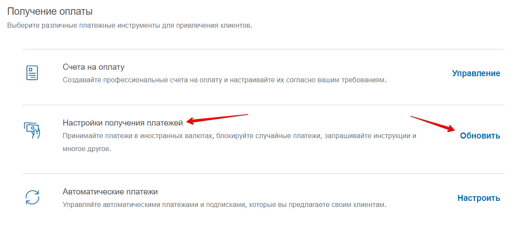
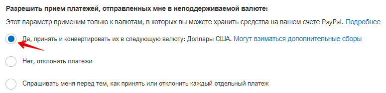
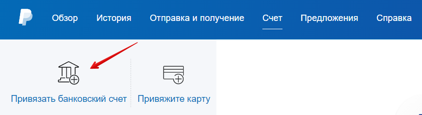
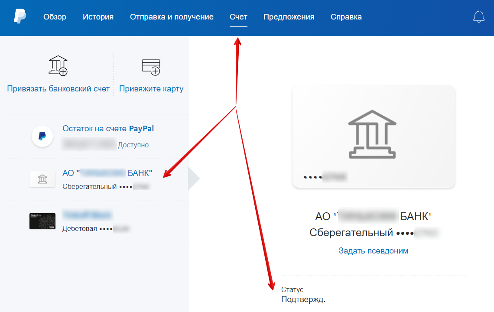
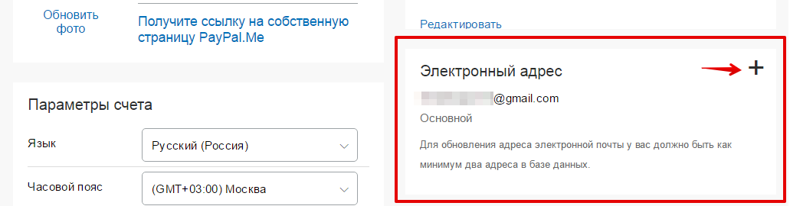
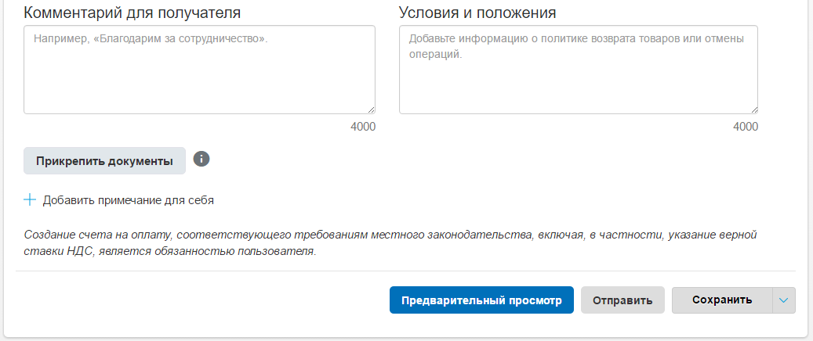

В настройках приёма платежей в первой строке выберете пункт Да, принять и
конвертировать их в следующую валюту: Доллары США.
Как выводить деньги с PayPal
Шаг 1 – добавляем счёт
Данная инструкция подходит только для тех стран, где разрешён вывод средств
с ПайПал.
Деньги с PayPal можно вывести только на свой банковский счёт. На привязан-
ную карту вывести деньги нельзя. Однако, если у вас есть карта, то есть и счёт
в банке, к которому привязана эта карта. Если у вас нет реквизитов счёта, то
нужно сходить в свой банк и запросить их в виде выписки (или посмотреть в
онлайн-банке, если там есть такая возможность).
Для того, чтобы добавить в ПэйПал свой счёт, перейдите в раздел меню Счет.


На открывшейся странице нажмите кнопку Привязать банковский счет.
Далее укажите БИК банка (код банка) и номер вашего банковского счёта (20
цифр, начинается с 4-ки).
После ввода данных нажмите кнопку Согласиться и привязать. Счёт добавлен.
Осталось его подтвердить.
После этого PayPal отправит на ваш счёт 2 небольшие суммы – от 1 до 99 ко-
пеек (в случае с Россией). Они должны прийти в течение 2-4 рабочих дней.
Если у вас подключена услуга SMS-информирования, то вы узнаете об этом по
пришедшей смс. Если не подключена, то нужно зайти в свой интернет-банк и
посмотреть выписку по последним операциям. Или же сходить в банковское
отделение и запросить бумажную выписку.
Как только вы получите оба перевода от PayPal, снова заходите в раздел Бан-
ковские счета и карты, нажимайте на добавленный вами счёт (он будет в ста-
тусе Готово к подтверждению) и введите пришедшие на ваш счёт суммы.


Нажимайте кнопку Подтвердить – всё, счёт добавлен и подтверждён.
Чтобы в этом убедиться, кликните на ваш счёт в разделе Счет и убедитесь, что
там стоит статус Подтвержден.
Шаг 2 – выводим деньги
Переходим в раздел Счет и нажимаем Перевести средства.


На новой странице выбираем счёт, с которого хотим вывести деньги (в том слу-
чае, если они хранятся в разных валютах), и нажимаем Далее.
Затем указываем банковский счёт, на который хотим перевести деньги.
Наконец, указываем сумму, которую хотим вывести.

После чего нажимаем кнопку Далее и набираемся терпения, так как банковский
перевод может занять до 5 рабочих дней.
О поступлении средств вы узнаете из СМС или с помощью выписки по счёту.
Если карта привязана к счёту, то деньги автоматически будут и на карте.
Если принимать оплату в долларах, а выводить на рублёвую
карту – деньги будут конвертироваться
Да, по требованиям российского законодательства, Пэйпал может выводить
деньги только в рублях.
Когда можно вывести деньги с PayPal
Если вы привязали к Пэйпал банковский счёт, то деньги можно выводить в лю-
бой момент. Даже сразу после поступления.
Сколько времени занимает вывод денег со счёта PayPal на
банковский счёт
Обычно это занимает 2-5 рабочих дней. Всё зависит от расторопности банков.

Что делать, если на Etsy указал(а) неверный PayPal - товар
продан, деньги не пришли
Самый частый пример – опечатка в написании почтового ящика.
Если такое случилось, то первым делом проверьте, можете ли вы зарегистри-
ровать email с таким адресом.
1. Если да – то после регистрации почтового ящика зайдите в аккаунт PayPal и
перейдите в личный профиль (кнопка шестерёнки в правом верхнем углу).
На вкладке «Счёт» есть раздел «Электронный адрес». Нажмите на значок плюса,
чтобы добавить только что зарегистрированный email.
На данный email вам придёт письмо с подтверждением. Подтвердите адрес.
После этого деньги, которые клиент перевёл на неверный адрес, должны быть
зачислены на ваш Пайпал счёт.
2. Если адрес электронной почты уже кем-то занят, и вы не можете привязать
его к своему аккаунту Пайпал, то необходимо:
• связаться с покупателем
• попросить его обратиться в PayPal или в свой банк (смотря с помощью
чего он оплатил покупку) для отмены операции и возврата денег
От себя лично порекомендую извиниться перед покупателем. И, например,
предоставить скидку на покупку товара после того, как ему вернутся деньги.
Можно ли к Etsy привязать PayPal аккаунт родственника из
другой страны
Да, это не запрещено.
Есть ли приложение PayPal для телефонов
Да, конечно, у ПайПал есть приложение для Айфонов и Андроид-телефонов.
Google Play Market – https://play.google.com/store/apps/details?id=com.pay-
pal.android.p2pmobile&hl=en
App Store – https://apps.apple.com/ru/app/paypal/id283646709
Как принимать платежи продавцами из Украины и Беларуси
Если вы живёте в Украине или Беларуси, то на текущий момент не можете при-
нимать платежи и выводить деньги со счёта PayPal. Поэтому у вас есть всего
несколько вариантов, как начать работать на Etsy:
1) Попросить родственника в другой стране (например, России) открыть счёт
в ПайПал на себя и принимать деньги на этот аккаунт.
2) Воспользоваться услугами посредников, например, Seller-Online или
WesternBid.
В последнем случае вы регистрируетесь на сайте одного из посредников и по-
лучаете адрес PayPal аккаунта, который нужно указать на Этси для приёма пла-
тежей.
Полученные деньги посредник потом отправляет на ваш банковский счёт или
карту за вычетом комиссии за свою работу.
Как выставить счёт в PayPal
Иногда появляется необходимость выставить покупателю счет. Например, если
посылка пропала, вы вернули деньги – а потом она всё-таки дошла, и покупа-
тель захотел заплатить вам снова.
Для этого необходимо зайти в ваш аккаунт ПэйПал, перейти в раздел Отправка
и получение, вкладка Отправить и нажать кнопку Отправляйте счета на
оплату.


Здесь необходимо ввести:
Поле 1: периодичность. Оставьте однократно.
Поле 2: номер счёта. Формируется автоматически.
Поле 3: дата счёта. По умолчанию выставляется текущая.
Поле 4: можно не заполнять
Поле 5: период оплаты (до какого числа можно оплатить счёт)
Поле 6: адрес электронной почты покупателя, на которую придёт счёт
Поле 7: убрать/добавить поля к этой форме
Поле 8: валюта счёта
Поле 9: наименование товара (можно указать, как на Этси)
Поле 10: стоимость


Поле 11: добавить ещё одну строку, если у вас в заказе несколько позиций
Поле 12: стоимость доставки
Можно также указать комментарий к счёту, параметры возврата/отмены и при-
крепить файлы.
После того, как все данные указаны, нажмите кнопку Предварительный про-
смотр. Если вас всё устраивает – нажмите кнопку Отправить.
На электронную почту покупателя придёт созданный вами счёт.
Как пополнить счёт PayPal
Допустим, что вам пришёл заказ. Вы вывели все деньги с PayPal.
После этого покупатель пишет, что хочет отменить заказ и просит вернуть
деньги. Но на вашем PayPal-счёте уже ничего нет и возвращать нечего.
В этом случае можно пополнить PayPal в салонах «Евросеть» и «Связной» (в
России). Для пополнения нужно назвать оператору адрес электронной почты, к
которой привязан ваш PayPal-аккаунт.
Пополнить максимум можно на 15 000 рублей за раз (и 40 000 рублей в месяц).
Данная возможность существует только для личных аккаунтов PayPal.